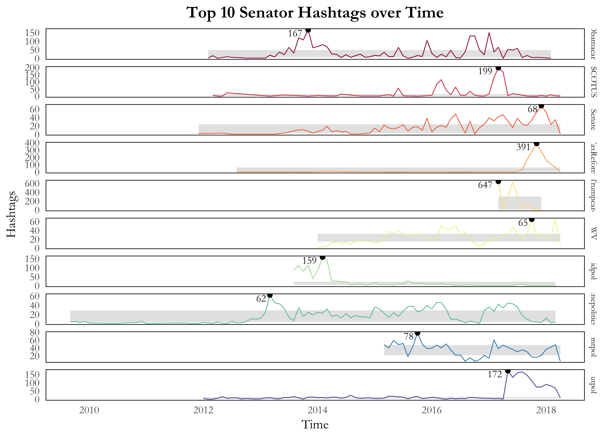
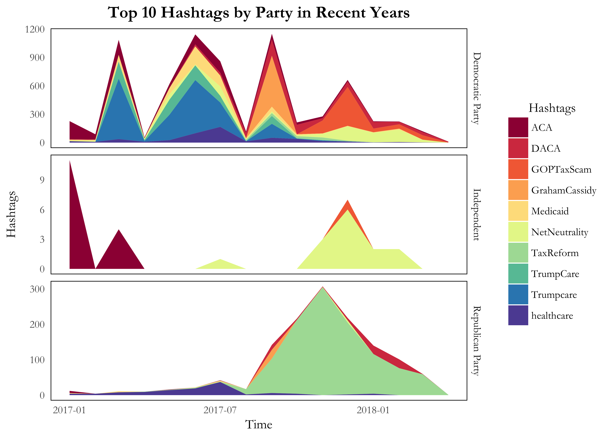
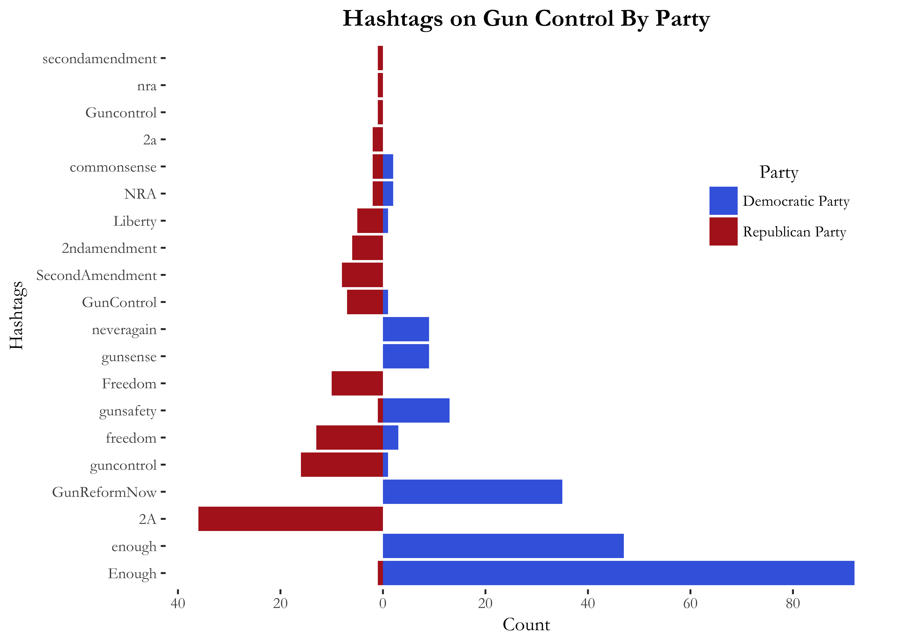
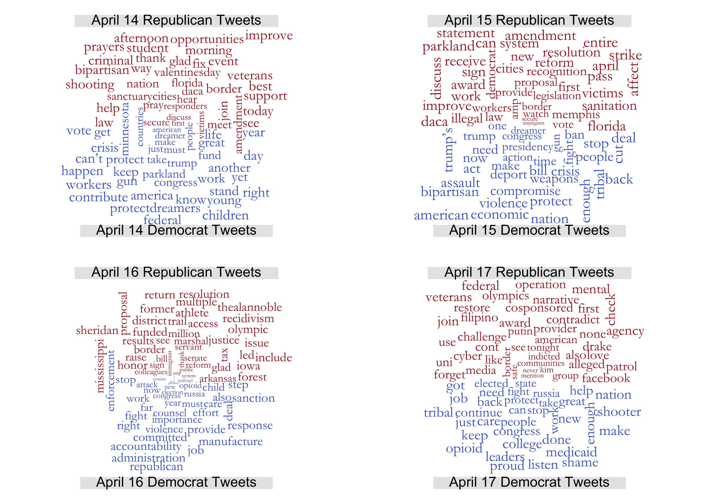
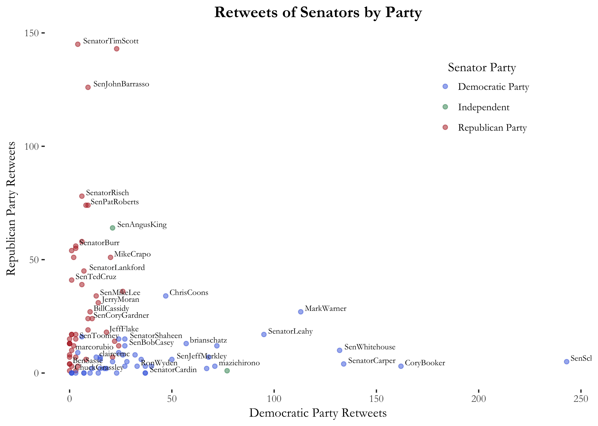
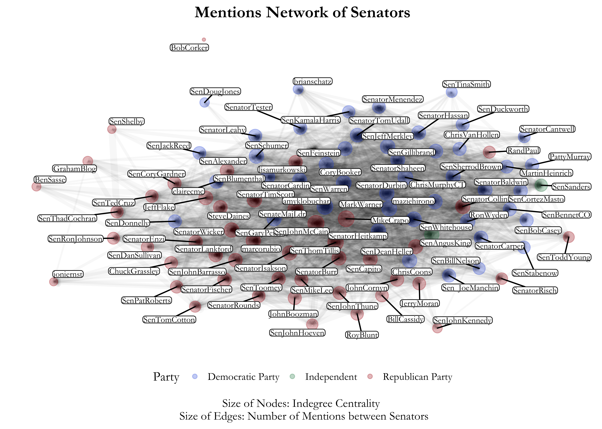
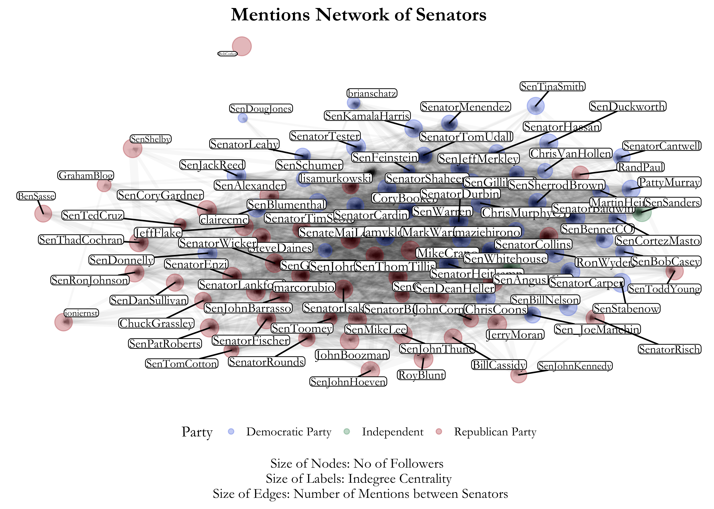

Data Visualisations of Twitter in the Senate
Setup
For this exercise, I realised that there are some senators in the “senators_follow.csv” file that are not in the corresponding “senators_twitter.csv” file, presumably because the files were compiled at different times. I therefore subsetted both files to only include senators that have a match on both files, resulting in 95 senators for analysis.
Part 1a
Below is a network visualisation of senators, where each vertex represents a senator and each edge represents a directed follow from one senator to another. The vertices are sized according to each senator’s in-degree centrality (how many senators follow them) and coloured according to the political party they belong to. The senators with the top 3 in-degree (Jeff Merkley, Mike Crapo, Mark Warner) and out-degree centrality (John McCain, Lisa Murkowski, Susan Collins) have also been marked out.
Because there are so many senators and most senators follow most other senators, the visualisation is extremely dense at the centre. Senators Claire McCaskill, Bill Nelson, Joni Ernst and (surprisingly) Marco Rubio seem to be least connected to the other senators with the lowest in-degree centralities (as evident from their small node sizes). Senator John McCain is interesting in that even though he follows many senators and has a very high out-degree centrality, his below-average in-degree centrality suggests that not as many senators follow him back. As expected, the network clusters along party lines, with most Democratic senators following other Democratic senators and most Republican senators following other Republican senators.

Part 1b
I next compare the results of automated mechanisms of cluster identification to the actual party identification of senators through the network visualisation below. The colour of the node represents the senator’s actual party and the colour of the label represents the estimate from the automated mechanism.
I am amazed by the results. The automated mechanism successfully estimated the parties of all Democratic and Republican senators, based on their patterns of twitter follows alone. The mechanism did not manage to classify the two Independent senators correctly and estimated them to be Democratic. This is not entirely surprising considering that they mostly follow/are followed by Democratic senators.

Part 2a
Below I visualise the time trend of the the senators’ top 10 hashtags in their tweets (not including retweets) since 2009. In order to create the plot, I aggregated the frequency of hashtag use by month.
I use a sparkline graph as I want to emphasise the time periods when each hashtag was most popular. We find that “Obamacare”" has consistently been one of the most popular hashtags, with peak use at the end of 2013 and throughout 2016. “mepolitics” has also been consistently popular since 2013, whilst “senate”, “SCOTUS” and “WV” has been consistently popular since 2016. There are also some “one-time-hit” hashtags which are popular for a while, but are then almost never used again. These include “Trumpcare”, which was very popular in early 2017, and “TaxReform”, which was similarly popular in late 2017. In fact these hashtags had the highest and second highest frequency of hashtag use in any single month.

Part 2b
I now subset the tweets to only 2017/2018 and visualise how the frequently each party uses the top 10 hashtags during this time period. Again, the frequency of hashtag use is aggregated by month.
I use an area plot as I want to visualise how much a party uses a certain hashtags as compared to other hashtags over the time period. The visualisation first reveals (interestingly) that Democrats tweet most of the top 10 hashtags. There are a few months where Democrats contributed up to 900 tweets with a top 10 hashtag, whereas Republicans only contributed up to 300 tweets with a top 10 hashtag in November 2017. Democrats and Republicans also tweet about different things. In the first half of 2017, the bulk of Democrat’s tweets had the hashtag “Trumpcare” or “trumpcare”, presumably to attack Trump’s healthcare policy. However, the Republicans were notably silent on the matter, apart from some use of the more neutral hashtag “healthcare” in July 2017. Even when the two parties tweet of the same thing, the way they frame their hashtag is very different. In late 2017, the bulk of Republican’s tweets had the positive hashtag “TaxReform”. The Democrats talked about tax policy too, but the bulk of their tweets instead had the much more negative hashtag “GOPTaxScam”.

Part 2c
I next visualise how senators from different parties frame the issue of gun control legislation. To do this I first create a dictionary of 10 hashtags that are associated with support for gun control legislation and 10 hashtags that are associated with support for gun rights.
I visualise how often Republican and Democratic senators use these hashtags with a pyramid plot. The visualisation is generally unsurprising. Most Democrats have expressed outrage at recent mass shootings with the hashtags “Enough” and “enough” and favour gun control legislation with the hashtags “GunReformNow”, “gunsafety” and “gunsense”. Most Republicans emphasise the right of Americans to hold a gun and use hashtags that relate to the second amendment, as well as broader hashtags relating to freedom.
I am, however, surprised by the fact that Republicans used the hashtag “guncontrol”/“GunControl”/“Guncontrol” more frequently than Democrats. This might indicate that some Republicans might be leaning towards some sort of minimal controls on guns. However, I also suspect that some of these hashtags are used to express criticism at the concept of gun control rather than to express support.

Part 2d
Below I visualise how senators responded to the Parkland shooting on 14 April. I use comparison word clouds of the text in tweets from 14 April to 17 April so I can visualise how the response changed over time and how it differed in both parties.
The first takeaway from the visualisations is that the shootings were not the only thing that senators were tweeting about and, in fact, words relating to the shootings only constitute a small part of the word clouds. By 17 April, whatever buzz there was regarding the shooting died down - there was almost no reference to the shooting by Republicans, whilst “enough” and “shooter” were some of the few words related to shootings used by the Democrats.
The next takeaway from the visualisations is that the way the shootings was framed differed by party. Republicans were sympathetic to the victims of the shooting and offered condolences, as evident from popular words such as “prayers” (April 14), “support” (April 14) and “victims” (April 15). However, the heavy use of “amendment” (April 14 and April 15) suggests that Republicans also emphasised the need to protect the second amendment. Democrats were much angrier that the shooting occurred and this can be seen from the popular use of “enough” (April 15 and April 17). Democrats emphasised the nature of the problem with words such as “violence” (April 15 and April 16), “assault” (April 15), “weapons” (April 15). They wanted stronger gun control legislation, as evident from their use of words such as “ban” (April 15), “enforcement” (April 16) and “action” (April 15).

Part 3a
I next use a scatterplot to visualise how senator retweets differ by party. As expected, most senators retweet along party lines. Most Democrats (coloured blue) retweeted a high number of their fellow Democrat tweets, whereas most Republicans (coloured red) retweeted a high number of their fellow Republican tweets. The most balanced retweeter is probably Chris Coons who has retweeted almost an even number of Democrat and Republican tweets. The two Independent candidates are interesting - whilst Angus King mostly retweeted Republican tweets, Bernie Sanders mostly retweeted Democrat tweets.

Part 3b
Again focusing on non-retweeted tweets, I then visualise a network based on the number of mentions between senators. In this network, each edge represents at least one mention from one senator to another in either direction (the network object is undirected). The size of the edge is weighted by the number of mentions. The vertices are sized according to each senator’s in-degree centrality and coloured according to the political party they belong to.
The network visualisation is frankly difficult to interpret because it is very dense at the centre, with many edges of very high weights since senators often mention each other. One interesting takeaway from the visualisation is that there is less clustering in twitter mentions. There are some Republicans, such as Rand Paul and Lisa Murkowski, who mentions/is mentioned by many Democrats. The reverse can be said for some Democrats such as Joe Donelly.

Part 3c
Below I re-create the previous visualisation. However, this time, the nodes are sized according to the senator’s overall followers (information retrieved from Twitter server), whilst the senator labels are sized according to the senator’s in-degree centrality in the network.
The aim of this visualisation is to compare the senator’s overall popularity (determined by followers) with the senator’s centrality in the senator network. Interestingly, the most popular senators are not always the most central. Bob Corker, for instance, is rather popular, as evident from the large node size, but has very few mention of/from other senators. By contrast, Ted Cruz and Diane Feinstein both have few followers, as evident from their small node sizes, but are quite central to the network.
